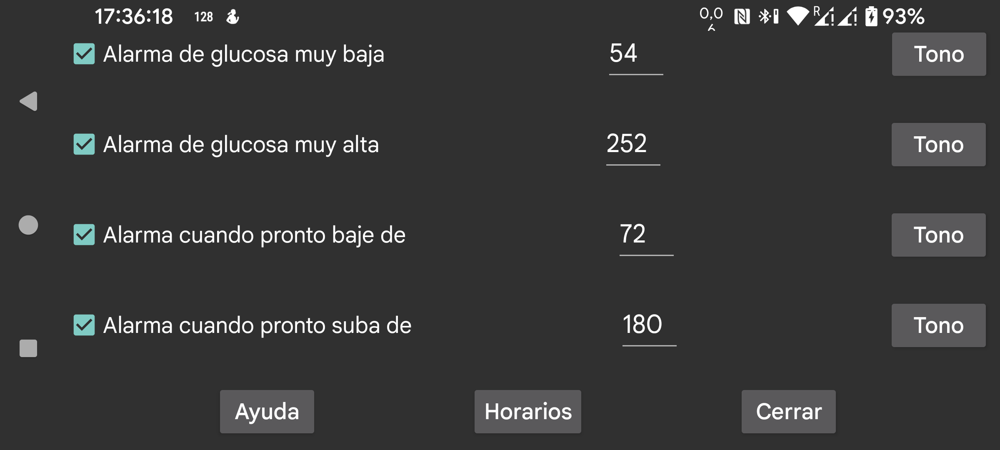

Segunda alarma para glucosa baja, que se activa cuando el valor de glucosa cae por debajo de la alarma de glucosa baja normal.
Segunda alarma alta, que se activa cuando el valor de glucosa supera la alarma de glucosa alta normal.
Alarma que se activa cuando un valor en descenso va a caer pronto por debajo de un determinado límite.
Alarma que se activa cuando un valor en subida va a superar pronto un determinado límite.
Permite hacer que un perfil determinado se active a una hora concreta del día. Así puedes usar distintos umbrales de glucosa o tonos durante el día y la noche, o desactivar automáticamente por la noche la lectura en voz alta de los valores de glucosa.